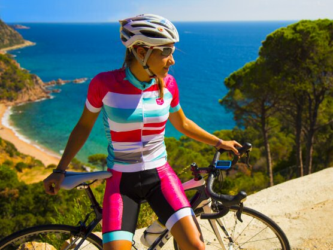

Transformaciones CBG en Imágenes Digitales

Aplicaciones: Mejora de fotografías, corrección de monitor, procesamiento médico, realce de imágenes
Multiplica cada píxel por un factor constante
Suma/resta un valor constante a todos los píxeles
Corrección no lineal usando exponenciación
Procesa solo el canal V (Value) del espacio HSV, preservando H y S
fsiv_convert_bgr_to_hsv()cv::split() separa los canales H, S, Vcv::merge() recombina los canalesfsiv_convert_hsv_to_bgr()El procesamiento en HSV es matemáticamente correcto pero visualmente más sutil
fsiv_cbg_process totalmente implementadacv::Mat::convertTo() - Para transformaciones lineales (contraste/brillo)cv::pow() - Para corrección gammacv::split() y cv::merge() - Separar/combinar canalesfsiv_convert_bgr_to_hsv() - Conversión BGR → HSVfsiv_convert_hsv_to_bgr() - Conversión HSV → BGR./build/cbg_process -i data/ciclista_original.jpg output.jpg